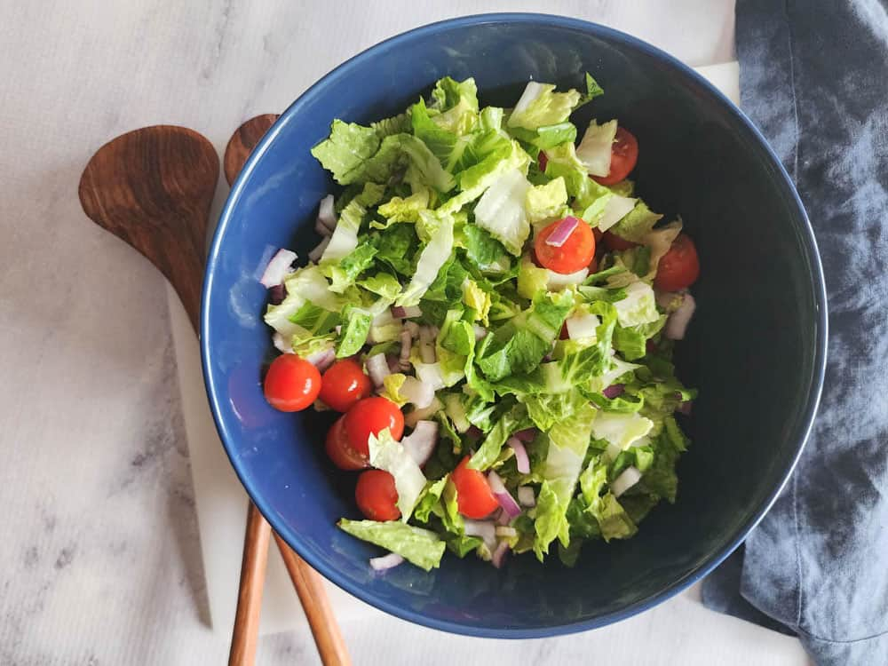

Egg
Home

Query riuscita
This image is an overhead shot of a fresh salad in a deep blue bowl.
Ingredients
- Chopped green lettuce (likely romaine or a similar crisp variety)
- Bright red cherry or grape tomatoes.
- Finely chopped white or red onion.
- Seasoning
- Prep Vegetables: Wash and roughly chop the lettuce (like romaine) into bite-sized pieces. Wash the cherry tomatoes and, if they are large, you can slice them in half. Finely chop the red onion.
- Combine: Place the chopped lettuce, tomatoes, and red onion into a large bowl (like the blue one pictured).
- Make Dressing (Optional but Recommended): A simple vinaigrette works well. Whisk together 3 parts olive oil, 1 part vinegar (like balsamic), salt, and pepper.
- Dress and Toss: Just before serving, drizzle the salad with your chosen dressing and gently toss everything together until the ingredients are lightly coated.